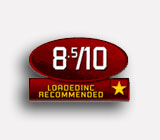
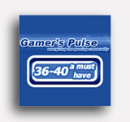

AWARDS

Hooked Gamers
Looking Back at E3 2006! "The 10 Games that Stood Out" Star Trek®: Legacy May 16, 2006 A Hooked Gamers pick for “The 10 Games That Stood Out” at E3, Legacy locked itself in as one of: “the most anticipated and stunning of the new and upcoming releases for the PC”…”Combat is large scale and dramatic as dozens of capital ships engage in real time 3D combat in the beautiful vastness of space. Boasting four famous races as playable and 60 technically accurate ships, Star Trek Legacy will offer a tremendous single player experience with campaign play or multiplayer online or Xbox Live.” |
Games First
“Best of E3 2006 Award” Gamer Approved Star Trek®: Legacy May 13, 2006 “We've assembled our official list of Gamer Approved titles. These are lock-ins that you will want to keep track of as their release dates get closer. Star Trek: Legacy brings the best the Star Trek universe has to offer. In fact, Legacy brings pretty much everything the Star Trek universe has to offer. Featuring spaceships and characters from pretty much every world in every series, this is set to be the ultimate title for Trek fans…it's safe to bet that Star Trek: Legacy will be huge.” |
GamerDad Authority Seal of Approval
4 Out of 5 Review Score Empire Earth® II August 10, 2005 “This (War Plan) could be the single greatest invention to come to RTS games since building queues. Consider this, you can make multiple Alliances with human players, send them different war plans, and then cancel treaties and attack where you know each foe is weakest. Finally, a game that fully exploits the true nature of the Internet player.” |
Academy of Interactive Arts & Sciences
Interactive Achievement Award Finalist “Strategy Game of the Year” Empire Earth® II January 13, 2006 Mad Doc is pleased to announce that Empire Earth II has garnered highly coveted “Strategy Game of the Year” Interactive Achievement Award Finalist honors from the Academy of Interactive Arts and Sciences. This marks our second major release receiving such critical praise. Our thanks to the Academy. |
IGN.com Editor's Choice Award
8.9 of 10 Game Review Score! Empire Earth® II April 25, 2005 “Empire Earth II is a deep and satisfying real-time strategy game.The campaigns are great, the multiplayer is super fun, and skirmis allows for tons of single player satisfaction thanks to some terrific AI that’ll give you fits...a truly enjoyable real-time strategy experience on all levels.” |
GameSpy.com
“Most Wanted PC Games of 2005” Empire Earth® II January 1, 2005 “Based on what we’ve seen so far, if Mad Doc manages to implement all its good ideas, Empire Earth II might be sucking up a lot of strategy gamers’ time in 2005.” |
IGN.com
“RTS Games of 2005” Feature Empire Earth® II January 1, 2005 “You should give serious consideration to Empire Earth II. Mad Doc Software is taking this property and doing wonderful things with it. Some of the new features make a person wonder why they had never been included in RTS games in the past. With a robust single player campaign filled out with multiplayer that could end up being a serious addiction, this one could be the first big RTS of the year.” |
|
Scripps Howard News Service
"5 Best Games Played at E3" Star Trek®: Legacy May 16, 2006 Star Trek: Legacy secured a hot spot on Scripps Howard’s “5 Best Games Played at E3” list. Once again receiving high praise: “No matter that this franchise is celebrating its 40th anniversary; the fan base is alive, and this game will be enjoyed by anyone who plays it.” |
PC Gamer
“The Best of E3 2004” Best of E3 Roundup Empire Earth® II August 1, 2004 Empire Earth II earned a coveted spot on PC Gamer’s “The Best of E3 2004” list, their praise: “The annual Electronic Entertainment Expo (E3) in L.A. is frickin’ loud. We braved the insane sounds…to bring back the very best the show had to offer…we pick the games that blew us away. The (EE) franchise has been handed off to a new developer. Mad Doc Software, the maker of the Empire Earth expansion The Art of Conquest, is taking over the reigns…and the new guys have some interesting ideas for the sequel.” |
ICIC-Inc. Magazine
“2005 Company To Watch” Mad Doc Software April 21, 2005 Inc. magazine, the resource for growing companies, and the Initiative for a Competitive Inner City, join forces to name the ICIC-Inc. Magazine “Companies to Watch.” This year, Mad Doc was honored to be named an ICIC-Inc. Magazine “2005 Company to Watch” at the 2005 Inner City 100 Summit in Boston. |
Gamezilla Recommended Buy
Dungeon Siege®: Legends of Aranna™ November 23, 2003 "This is a fantastic title, and should score points both for Diablo-style dungeon crawlers, as well as adventure/RPG hybrid lovers. With no load time between levels, it’s also good for those with shorter attention spans.” |
AIAS Interactive Achievement Award
Finalist: Computer RPG of the Year Dungeon Siege®: Legends of Aranna™ February 24, 2004 The Academy of Interactive Arts and Sciences named Dungeon Siege®: Legends of Aranna™ an Interactive Achievement Award 2004" Computer Role Playing Game of the Year" Finalist. ActionTrip Editor's Choice
Dungeon Siege®: Legends of Aranna™ November 11, 2003 "The most important thing to note about Legends of Aranna is that it's in many ways both a qualitative and quantitative advancement over the original. It's really, really rare that gamers are treated to such a phenomenon, but let's just be thankful that such things still happen.” |
|
Gamespy Editor's Choice
Dungeon Siege®: Legends of Aranna™ November 11, 2003 "Not only do you get the full original game, but you also get a new campaign with a more than respectable amount of game time, new spells, treasures, monsters, and improved interface options...there's so much goodness here that it's practically a sequel.” Gaming Illustrated's Firm Grip
Dungeon Siege®: Legends of Aranna™ November 11, 2003 "Here you can experience a vast realm, with excellent art and graphics, richly woven story, and the depth to keep you occupied for many days! This is like running into an old friend, and having a great time together again! It adds extra dimension to playability, and offers excellent value. If you like RPG – this is a MUST HAVE.” |
PC Gamer
Review Verdict: Excellent! Dungeon Siege® Legends of Aranna™ November, 2003 “Weep with joy, for there are five new realms to conquer. A new kit has been added, along with new weapons, new enemies, and dazzling new environments, but developer Mad Doc has wisely stuck to the franchise’s winning formula…As an example of near-perfect play-testing, Legends of Aranna is hard to beat…Some of the environments are downright amazing, and crammed with great surprises.” |
|
Gaming Horizon
9.3/10 Review Score! Empire Earth®: The Art of Conquest October, 2002 “This game is clearly designed with the intention of making any die-hard strategy gamer foam at the mouth and spout bizarre gurgling sounds of joy while playing it. This is not only a well polished expansion to a truly awe-inspiring RTS game that features a staggering, mind-boggling and eye-crossing attention to detail, but also serves as a demonstration of the versatility and joyous gameplay available on the PC for die-hard strategy fans!” |
 Loadedinc Recommended Buy
Dungeon Siege ®: Legends of Aranna™ November, 2003 "The game is addictive and will have you hooked for hours on end, it's fast moving and a good length for once…If you loved the original this is a must have expansion, and if you're new to Dungeon Seig then this is an excellent time to start, there's hours of gameplay making Legends of Aranna great value for money.” |
Gamezone Editor's Choice
Empire Earth: The Art of Conquest™ September 22, 2002 "This is a really good expansion pack to Empire Earth. It adds so man little things that it will be worth the players' hard earned cash. The Space Epoch itself is worth the price of it. If players love Real Time Strategy games, and already own Empire Earth, they need to go to th nearest electronic store and pick this gem up!” |
Gamer's Pulse A Must Have
Jane's® Attack Squadron July 15, 2002 "The first thing that drew me into the game was the amazingly beautiful world in which the game takes place. Every detail of the planes and engines and terrain are simply amazingly real. I have no played a flight simulator that has as nice a realistic feel as this one.”  |
PC Gamer United Kingdom
Editor’s Choice Award Winner 93% Review Score! Jane’s® Attack Squadron July, 2002 We’re pleased to announce that Jane’s Attack Squadron received the highest praise from PC Gamer UK, earning its highly coveted equivalent to the “Editor’s Choice Award” here in the US upon its release. The award is granted to games that score a 90% or higher, and in their words: “It’s not easy to get here, and darn near impossible to get near 100%. Games in this range come with our unqualified recommendation, an unreserved must-buy score.” |
Game Vortex
9 out of 10 Review Score! Jane’s® Attack Squadron July, 2002 High praise for Jane’s: “The recreation of the WWII air attacks and battles is entirely historic and realistic. Attack Squadron not only provides excellent battles and warfare, but it also gives enough insight to the history of World War II, to fully envelop a player into the patriotic past of the Second Great War.” One Of The Top Selling Star Trek Games Of All Time
Star Trek Gaming Universe Star Trek: Armada II July 15, 2005 According to the latest stats from Star Trek Gaming Universe, Mad Doc Software’s Star Trek: Armada II stands tall as One of the Top Selling Star Trek Games of all Time. The unofficial list as of 2005 has Star Trek: Armada II holding a strong position in the Top 10 (6 th best selling title of all time). |
ConsumerGuide Products Recommended Buy
Star Trek: Armada II November 25, 2001 “Armada II is an excellent sequel, and although the emphasis has shifted more to gathering resources than combat, both experienced and new players should enjoy this Star Trek universe…Fast-paced combat combined with resource building and planning results in a well-rounded real-time strategy game. The story line is well done, and fits the Star Trek universe.” |


©2006 MAD DOC SOFTWARE. ALL RIGHTS RESERVED.
Copyright Information | Terms of Use